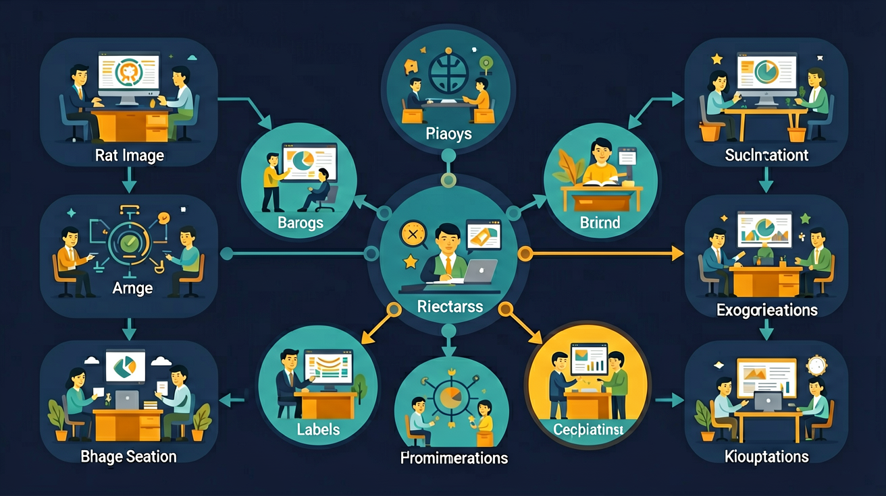

从生活实例出发，概述算法的概念与特征，运用恰当的描述方法和控制结构表示简单算法。

🎯 能说出算法的五大特征（有穷性、确定性等）
🎯 能判断常见算法的时间复杂度等级（O(1)/O(n)等）
🎯 能分析简单场景下不同算法的时间复杂度差异
❓ 1. 算法不就是写代码吗？为啥还要专门学概念？
❓ 2. 时间复杂度O(n²)里的n到底指什么？
❓ 3. 老师总说'最优算法'，但现实中真有完美解法吗？
学完这一课，这些问题你都能自信地回答。
下列哪项不是算法的必备特征？
时间复杂度O(1)表示：
算法概念与复杂度是高中信息科技的重要内容。从生活实例出发，概述算法的概念与特征，运用恰当的描述方法和控制结构表示简单算法。
掌握一种程序设计语言的基本知识，使用程序设计语言实现简单算法。
算法是解决一类问题的有穷步骤序列，通常具备输入、输出、有穷性、确定性和可行性。同一问题可有多种算法，评价常看正确性、时间复杂度和空间复杂度。时间复杂度用大O记号描述规模n增大时运算次数的增长趋势，如O(1)、O(n)、O(n log n)、O(n²)。高中阶段重在建立“先想步骤再写代码”的意识，并能比较不同算法的效率差异。
读题先明确输入输出与约束；再写出伪代码或流程图；最后用典型规模估算比较：循环套循环常接近O(n²)，分治/二分常见O(n log n)。答题时说明“为何正确”和“为何更快/更省空间”。
常见误区：常见误区是把“能跑出结果的一段代码”等同于好算法，忽视正确性边界与复杂度；或误以为大O越小就一定最好，而不看问题规模与常数开销。
算法必须具备的性质之一是？
1. 混淆算法与程序：学生常将算法等同于具体编程代码（如Python语句），这是将抽象逻辑与具体实现混为一谈。根源在于忽视算法是"解决问题步骤的描述"这一本质特征。例如在描述"求三个数最大值"时，正确做法应先画出流程图或伪代码展示比较逻辑，而非直接写print(max(a,b,c))。算法应独立于编程语言，就像菜谱可以翻译成各国语言但步骤逻辑不变。
2. 忽视输入明确性：约65%的学生设计算法时会遗漏输入条件的严格定义。如设计"判断闰年"算法时，仅写"输入年份"而未说明必须是正整数。这种错误源于对算法"确定性"特征理解不足，实际应用中会导致类似2000年（能被400整除的特殊世纪年）判断错误。正确做法必须明确输入范围、格式和边界值。
3. 复杂度计算偏差：在分析冒泡排序时间复杂度时，近半数学生会错误记为O(n)而非O(n²)。问题出在未理解嵌套循环的乘积关系，以及最好/最坏情况的区分。通过具体计数：10个元素在最坏情况下需要(10×9)/2=45次比较，随n增大呈现平方级增长，这个具象化过程能纠正认知偏差。
关于空间复杂度，正确的是：
设计实验比较不同配送策略：顺序配送、按距离排序、分区配送
先独立作答，再点选项查看对错与错因。
下列哪种情况最能体现算法时间复杂度差异？
快递员发现对N个地址排序后配送，总时间从O(N²)降到O(NlogN)。这说明：
评估两个配送算法时，最可靠的方法是：
当算法时间复杂度为O(1)时，说明执行步骤与____无关。
答案：输入规模
常数复杂度不受问题规模影响
在快递路线问题中，穷举所有可能路线的算法属于____复杂度。
答案：指数
组合数随地址增加呈爆炸式增长
✅ 需权衡时间和空间复杂度，如递归算斐波那契数快但耗内存
💡 忽视算法实际应用场景的限制条件
✅ 双重循环可能仍是O(n)（如遍历矩阵时n指总元素数）
💡 混淆问题规模n的具体定义
口诀：算法五特征：输入输出确定性，有穷可行才算行
类比：像组装家具说明书：步骤漏一步都装不成（确定性），但也不能无限循环装不完（有穷性）
【真题】对n个元素做二分查找的时间复杂度是：
快递员给30户送快递，若采用O(n²)算法规划路线，当用户增至60户时，耗时约为原来的：
下列生活场景中，哪个最能体现'空间换时间'的算法思想？